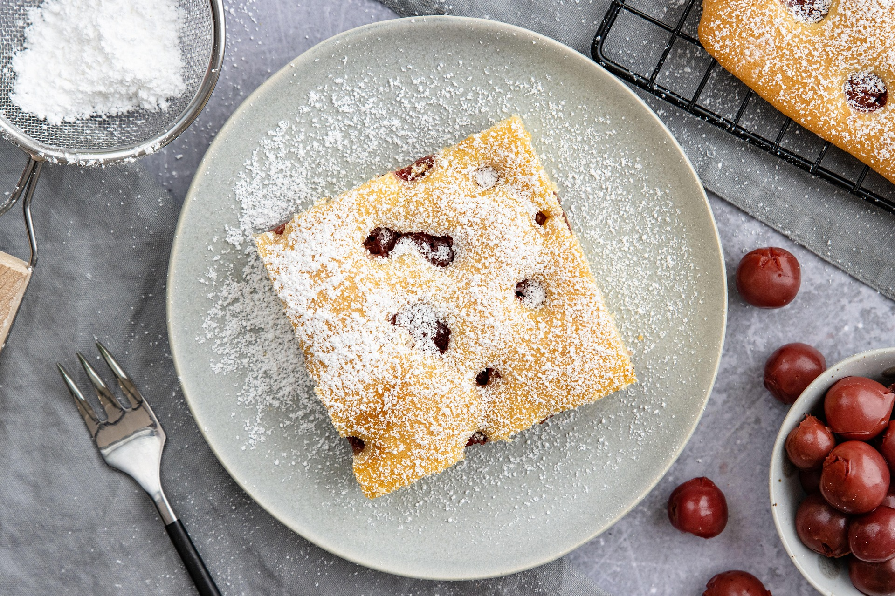

Recipe of Cake
Home

Descriprion of Cake
Cake is a sweet baked dessert typically made from flour, sugar, eggs, and fat, combined with leavening agents to create a light, tender crumb. Tracing its origins back to ancient bread-like treats sweetened with honey and dried fruits, modern cake evolved with the introduction of refined sugars and chemical leaveners like baking powder. When baked in the oven, trapped air bubbles expand and proteins set, transforming a liquid batter into a soft, airy structure that can be shaped into layers, sheets, or loaves.
Beyond classic vanilla sponge and rich chocolate layer cakes, the dessert spans a wide variety of styles worldwide, including dense pound cakes, airy angel food cakes, and creamy cheesecakes. Cakes are commonly finished with buttercream frosting, whipped cream, fruit glazes, or fondant, making them a staple centerpiece for birthdays, weddings, and celebrations, as well as an everyday treat paired with coffee or tea.
List of Ingredients
- All-purpose flour: 2 cups (240 g) to build the cake's structure
- Granulated sugar: 1 ½ cups (300 g) for sweetness, moisture, and a tender crumb
- Unsalted butter: ½ cup (115 g), softened to room temperature, for richness and flavor
- Eggs: 3 large eggs, at room temperature, to bind the batter and add lift
- Whole milk: 1 cup (240 ml), at room temperature, to keep the batter smooth and moist
- Baking powder: 2 tsp to help the cake rise evenly
- Vanilla extract: 2 tsp for warm aromatic flavor
- Salt: ½ tsp to balance the sweetness
Steps to make Cake
- Prep the Oven and Dry Ingredients: Preheat your oven to 350°F (175°C) and grease and flour two 8-inch (20 cm) round cake pans, lining the bottoms with parchment paper so the cakes release easily. In a medium bowl, whisk together the all-purpose flour, baking powder, and salt until evenly combined, then set the mixture aside.
- Cream the Butter, Sugar, and Eggs: In a large mixing bowl, beat the softened butter and granulated sugar together on medium-high speed for two to three minutes until the mixture looks pale, light, and fluffy. Add the eggs one at a time, beating well after each addition until fully incorporated, then mix in the vanilla extract.
- Combine Wet and Dry Mixtures: The mixer to low speed and add about one-third of the dry flour mixture to the butter mixture, stirring just until combined. Pour in half of the milk and mix gently, repeating this alternating pattern—flour, milk, and the final portion of flour—being careful not to overmix once the last streaks of flour disappear.
- Bake and Cool: Divide the batter evenly between the prepared cake pans and smooth the tops with a spatula. Bake for 25 to 30 minutes until the tops are golden and a toothpick inserted into the center comes out clean, then let the cakes cool in the pans for 10 minutes before turning them out onto a wire rack to cool completely before frosting.